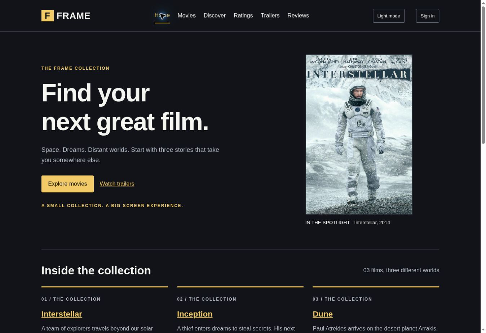
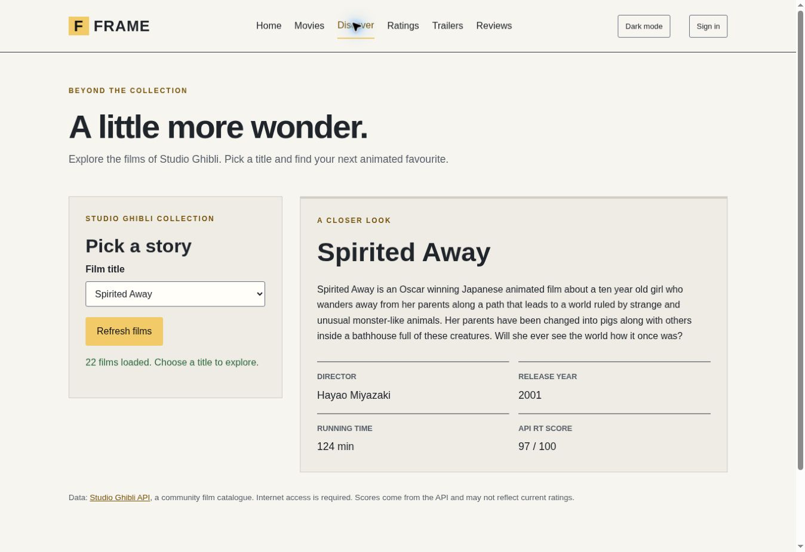
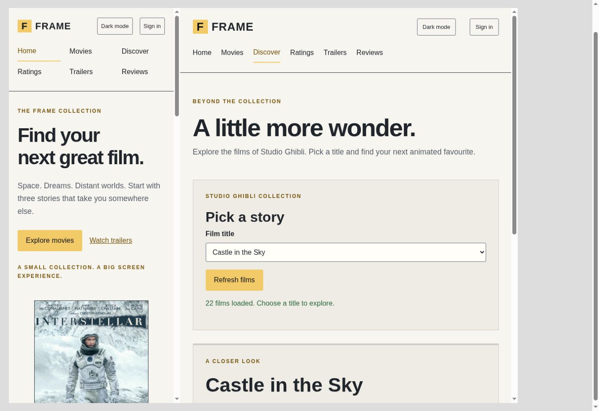

FRAME / Movie Guide
WEB TECHNOLOGIES FINAL / SIMPLIFIED VERSION / 17 NOVEMBER 2026
Group: Duiset Nurzhigit, Seitkapar Magzhan and Korganbek Madiyar. This report describes the locally prepared Final project. The group must confirm its individual Final contributions and publication before submitting this draft.
1. Objective and structure
FRAME helps visitors choose a film, explore its story, watch a trailer and record a personal rating. It continues the Endterm movie topic and black-and-gold identity. The simplified version uses plain HTML, CSS, JavaScript and jQuery, with no build step or backend.
| Page | Purpose |
|---|---|
| Home | Introduction, featured collection and six-question FAQ. |
| Movies | Three film cards with text search. |
| Discover | Live Studio Ghibli API, film selection and refresh. |
| Ratings | Three personal scores, average, saving and clearing. |
| Trailers | Links to official trailers on YouTube. |
| Reviews | Sample reviews and a page-only add/delete form. |

Repository: github.com/Nurzhigittt/WEB-TECH-PROJECT-FRAME
GitHub Pages target: nurzhigittt.github.io/WEB-TECH-PROJECT-FRAME/
Features and code
2. Final requirements
| Requirement | Implementation |
|---|---|
| HTML / CSS | Semantic HTML, six pages, shared navigation, one external stylesheet, Flexbox, Grid, Bootstrap and media queries. |
| Theme | main.js reads frame-theme, adds/removes body.light and saves the choice. Each page restores it on load. |
| Local sign-in | Name/email form uses required, minlength and type=email plus a trimmed-name check. Only frame-name is saved. The header greets the user; sign-out removes the name. |
| jQuery FAQ | Six film-related questions use .on(), .next(), .slideToggle(250) and .find(). The indicator and aria-expanded change with each click. |
| Public API | discover.js uses fetch(), async/await and response.json(). A for loop creates film options. change displays the selected film; Refresh requests data again. |
| Failure handling | response.ok, array/empty checks and try/catch handle HTTP, network and invalid-data failures. A visible message invites the user to retry. finally enables Refresh. |
| Files and credit | Local Bootstrap CSS, full jQuery, licenses and three posters. AI credit appears in every footer and in this report. |
3. Course topics applied
Week 1 provides HTML structure, forms and tables. Week 2 covers selectors and the box model. Week 3 supplies Flexbox/Grid; Week 4 supplies Bootstrap and media queries. Week 7 and the DOM lecture support functions, variables, events and text changes. Week 8 supplies jQuery. Weeks 9-10 support Promises, async/await, fetch and JSON. localStorage is required by the Final rubric.
4. Data and simplification choices
The five custom JS files total 249 lines, compared with 727 in the earlier package. The code uses named functions, if/else, loops and direct DOM operations. Optional modal dialogs, password-strength logic, API sorting/pagination and generic record editing were removed. Ratings remain persistent; added reviews exist only until page reload, as the form explains.
The sign-in is a local demonstration, not secure server authentication. Email is validated but never stored or sent. API/user strings use textContent. Internet is needed for the community API and YouTube. Browser storage must be enabled for persistence.
Development and group work
5. Development process
The existing FRAME package was compared with the Final rubric and all eight supplied lecture files. Required functionality was rewritten with short, page-specific scripts. The original group, film subject, posters and visual identity were retained. Local browser checks covered persistence, input validation, API success/failure and responsive layout. Documentation and screenshots were updated. No commits, pushes or deployment were performed.
6. Individual responsibilities
The existing project README records these Endterm responsibilities. They remain the starting point for the group; they do not certify authorship of the newly AI-assisted Final changes.
| Member | Existing Endterm responsibility | Suggested Final review ownership |
|---|---|---|
| Duiset Nurzhigit | Home, Movies and navigation. | Theme, local sign-in and movie search. |
| Seitkapar Magzhan | Ratings, Trailers and ratings table. | API selection/refresh/errors and saved ratings. |
| Korganbek Madiyar | Reviews, form and responsive styles. | jQuery FAQ, reviews, mobile layout and report. |
Group confirmation needed: the last column is a proposed allocation. Before submission, each member must replace it with the changes and checks they actually completed, and confirm the report together. Commit history should reflect genuine work. The six-minute defense includes a three-minute group demonstration and approximately one minute of questions per student.
7. AI acknowledgement
OpenAI ChatGPT/Codex assisted with code simplification, theme persistence, local sign-in, the jQuery FAQ, Studio Ghibli API integration, responsive styles, debugging, testing and documentation. The website footer provides the same acknowledgement. The group is responsible for understanding, reviewing and accurately describing the submitted work.
8. Verification and remaining steps
Observed locally: valid sign-in and sign-out persist across reload; theme persists across pages; search returns matching cards; FAQ opens/closes; the live API returns 22 films and selection/refresh work. A QA-only rejected request showed the error message, then recovered on retry. Ratings 9/8/7 saved with average 8.0 and cleared correctly. Review text containing HTML remained literal; add/delete worked. All six pages had no document-wide horizontal overflow at phone/tablet widths.
The group must publish before its LMS deadline, verify the API and all required features on GitHub Pages, and individually submit both URLs. This version has not been verified on the deployed domain, in Safari/Firefox or on physical devices. The LMS deadline and submissions were not inspected. Detailed results: docs/TEST_RESULTS.md.
Screenshots and sources


Sources: supplied course lectures and Final Project Requirements_2026.pdf; original FRAME source and README; Studio Ghibli API (https://ghibliapi.vercel.app/); official Bootstrap 5.3.3 and jQuery 3.7.1. Film artwork and trailer references, plus dependency licenses, are documented in SOURCES.txt and vendor/.